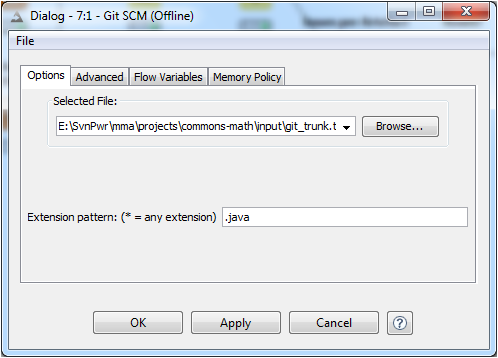

DePress
Defect Prediction in Software Systems
An Extensible Software Measurement & Defect Prediction Platform
Lech Madeyski, Marek Majchrzak
Motivation
A standardized, intuitive and extensible framework would make it possible to include predictive modelling in general, and defect prediction analyses in particular, as one of the common QA or SPI tasks, such as code review or software testing.
Support for versioning repositories like SVN and GIT, bug and issue trackers like JIRA or Bugzilla and other measurement using simple configuration without need of custom development.
Reuse of techniques offered by the most widely used platforms, such as R, Weka or KNIME.
Open Source and open for collaboration.
DePress Concept
 Conceptual workflow for pre-release data collection
Conceptual workflow for pre-release data collection
DePress Architecture
- KNIME* as an integration backbone
- Independent Plugins
- Separate PDE** projects for each plugin group
- Simple data exchange (via KNIME tables)
- Reused KNIME components and guideline's
- Online and offline work mode
* KNIME Framework is an integration backbone which allows one to use various external statistical and machine learning tools. ** The Plug-in Development Environment (PDE) provides tools to create, develop, test, debug, build and deploy Eclipse plug-ins.


DePress Plugins V2 (ongoing)

Example
Commons Math 3.1 Post Release Defects




Open Source and Collaborative Development Model
Licensing Policy: GPL v3 License
Contribution: Wroclaw University of Technology, Capgemini Poland


Summary
DePress is a visual and workflow-oriented framework based on KNIME framework.
DePress supports software defect prediction but also, to some extent, other areas of predictive modelling in software engineering where the collected metrics can serve as predictors.
Developed under GPL v3 on GitHub platform.
Future work
- Support for new data sources
- Support for code churn and burst change related metrics
- Evaluate the effectiveness of DePress usage by QA Engineers in commercial software projects
- Open to wider group of contributors and researchers